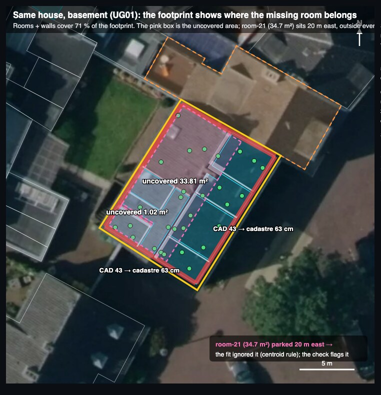

Why the building outline helps
The outline is the official shape of the house from the land registry, laid under the floor in LumoCad. One real building (Aldegundiskirchplatz 2, Emmerich), measured on 12 November 2026.
1. It knows which scans were taken outside the house
A scanner position outside the line is an outdoor scan. Today a person has to mark those by hand.
2. It knows which way round the house sits
A nearly rectangular outline fits the rooms just as well turned by 180°. The neighbour’s outline settles it: nobody scans inside the neighbour’s house.
3. It measures how thick the outer walls really are
Scans see only the inside face of an outer wall. The line is the outside face, so the gap between them is the wall. Here the drawn walls were 15 cm too thin.
Wall 7 is the check: it was drawn from both sides at 65 cm, and the line agrees within 3 cm. The line is accurate to a few centimetres where the house was surveyed, to decimetres where it was traced from old maps.
4. It finds a room left outside the house
A room whose scans all stand outside the line does not belong there. In this basement one room sat 20 m away, and the line shows the hole where it belongs.

5. What it does not do
Inside the puzzle solver, as a score, the line changes nothing on real scans. Its value is around the solver, not in it.
All numbers
| What | Value |
|---|---|
| Scans of the outdoor room outside the line | 14 of 14 |
| Scans of indoor rooms outside the line (ground floor + basement) | 0 of 78 |
| Scans contradicting the wrong orientation / the right one | 7 / 0 |
| Outer wall thickness, drawn vs line, walls 1–6 | 43 vs 56–63 cm |
| Wall 7, drawn vs line | 65 vs 68 cm |
| Fit of the line to the drawn walls after refinement (RMS) | 48 mm |
| Basement room outside the line / hole inside it | 34.7 m² / 33.8 m² |
| Puzzle, ground floor, wrong among proposed: without / with | 0 / 0 |
| Puzzle, ground floor, proposed of 42: without / with | 34 / 31 |